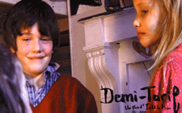

|
DEMI-TARIF (Half price)
Isild le Besco | Frankreich 2004 | 63 min.
Format: 35mm
Material: MiniDV
Original language: French
Script: Isild le Besco
Camera: Jowan le Besco
Editing: Isild le Besco
Sound: Frank Desmoulins, Daniel Sobrino
Cast: Kolia Litscher, Lila Salet, Cindy David
Production: Catherine Belkhodja (Karedas)
www.demitarif.lefilm.free.fr
The young actress Isild le Besco started writing the script for "Demi-tarif" at the age of 16. Making the film was a really family affair: big brother was behind the camera, her little brother acted as well, and many scenes were filmed in le Besco’s own house.
Three children aged seven, eight and nine years old have been deserted by their mother. A father – each has a different one – has never really been around. They survive by shoplifting and begging for food from fast-food restaurants. For them, the city of Paris is one big playground. They take free trips on the Metro, play outside until late at night and sneak into cinemas to see their favourite films. The teacher at school starts to get suspicious because of their dirty clothes, but the hard-boiled kids manage to talk their way out of that. Chris Marker described the film as “the forerunner of a new nouvelle vague”, within which Demi-Tarif was “the new A Bout de Souffle”. He did not mean that there was any similarity in the story or style, only in the viewing experience. The unrestricted DV camera films the three children like a fourth brother and always from their own perspective. As a result, the spectator gets a special glimpse of their own world. A rough diamond. - Sandra den Hamer, International Filmfestival Rotterdam
Isild le Besco, born in 1982 has worked in front of the camera since she was eight, with feature credits including Adolphe (2002), Le Coût de la Vie (2003), A tout de suite (2004) and L’Intouchable (2006) by Benoît Jacquot . She was twice nominated for a César for her roles in Sade and Roberto Succo. She is the sister of the actress Maïwenn, who directed Pardonnez moi that can be seen at this years’ Underdox Film Festival as well.
Films: T’es où? 2000 | Demi-Tarif 2004
back
|